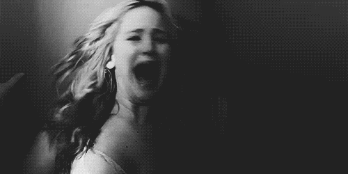

El terror psicológico se centra en la exploración de los estados mentales, emocionales y psicológicos para generar miedo, inquietud y perturbación en el espectador o lector. En lugar de depender de amenazas externas o elementos sobrenaturales, este género se enfoca en la mente humana, sus miedos internos, como la paranoia, la ansiedad, la locura, y la forma en que estos pueden crear una atmósfera de terror. Se basa en la mente y las emociones del protagonista y del lector. No es el miedo a lo tangible, sino a lo desconocido, a la locura o a la pérdida de control. Autores como Edgar Allan Poe o Shirley Jackson han explorado este tipo de terror en relatos donde la mente se convierte en el principal enemigo.
El terror psicológico se centra en la exploración de los estados mentales, emocionales y psicológicos para generar miedo, inquietud y perturbación en el espectador o lector. En lugar de depender de amenazas externas o elementos sobrenaturales, este género se enfoca en la mente humana, sus miedos internos, como la paranoia, la ansiedad, la locura, y la forma en que estos pueden crear una atmósfera de terror. Se basa en la mente y las emociones del protagonista y del lector. No es el miedo a lo tangible, sino a lo desconocido, a la locura o a la pérdida de control. Autores como Edgar Allan Poe o Shirley Jackson han explorado este tipo de terror en relatos donde la mente se convierte en el principal enemigo.

 Es un subgénero en el cual se hace representación de muchas escenas sangrientas explicitas. - Aquí el horror se lleva a lo extremo con descripciones explícitas de violencia. Se caracteriza por escenas crudas y sangrientas, donde los personajes suelen sufrir mutilaciones o muertes espantosas. Este subgénero es común en el cine de terror y también aparece en literatura con obras como American Psycho de Bret Easton Ellis.